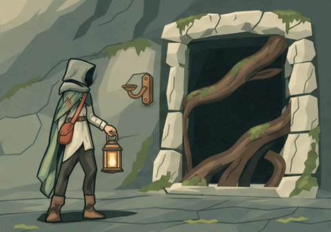

Night Passage candidate fiction. A traveler gives up a lantern; a path opens; the light stays.

Native GIF · four chapters ·64 frames ·19.2seconds. Palette and fixture changes remain visible at cuts. This is a review proposal, not accepted canon or runtime artwork.
Open/restart joined GIF · Reference still · Story beats · Compare joins
Original chapters: Raise · Offer · Answer · Pass
Brief and validation. Native GIF viewing has no true pause or frame seek; use the still link for a motionless view. The existing asset gallery retains its GIF play/source-study controls after import.